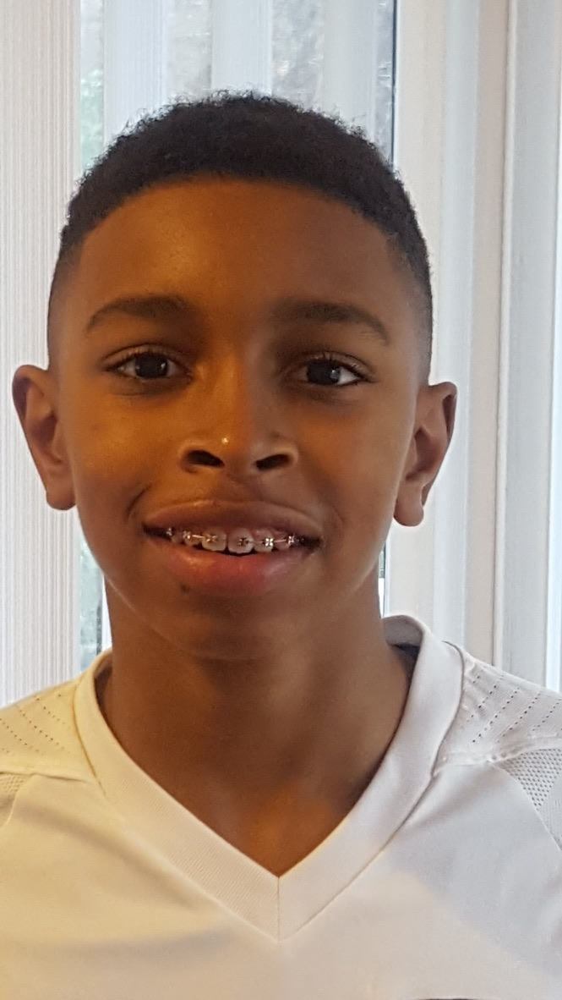
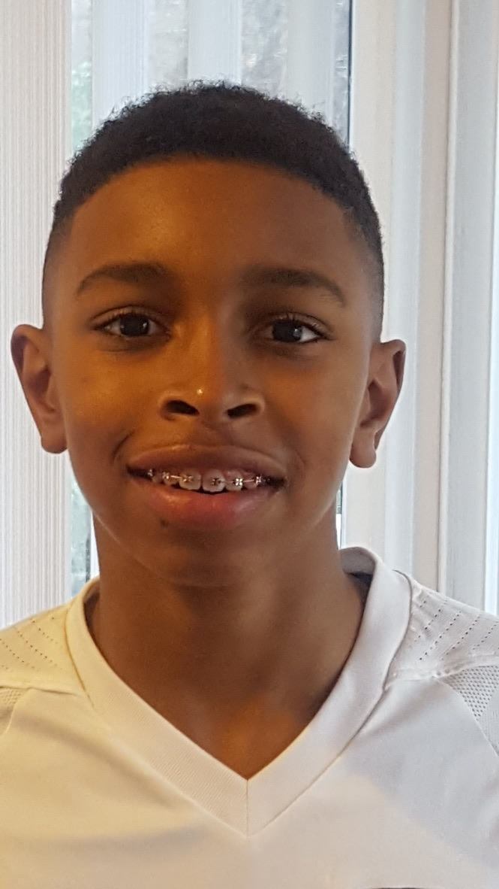

Welcome to My Personal Website
 

This is a page all about me. At the top of the page you can find links to my Sports page, where I talk about some of my accomplishments in sports. As well as a link to my Undercover page, where you get to know a more personal side of me.
About Me
My Name is Nathan Monteiro, I am a second generation Cape Verdean American.
My favorite hobbies include:
- Playing Video Games
- Watching Anime
- Listening to music
My main hobby is sports and I have played different sports all throughout my life. You can see some that I have played at mySports Page.
Work/Education
I am a sophomore student at Stonehill College. I am a computer science major and a business minor. My work experience includes working for Handshake AI, in terms of helping with project Hedgehog, Lexicon and hoping to join Helix. All three projects are based on AI and the improvement of AI.
Prior to Stonehill, I went to a Catholic highschool in Brockton, MA called Cardinal Spellman High School.
Contact Info
Email: nathanmon.06@gmail.com
GitHub: Natem-11